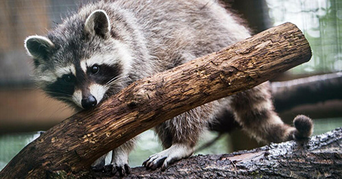

This webpage is all about Raccoons.
They like to eat a lot of trash
Raccoons are an amazing animal species that have the scientific name Procyon Lotor. a mammal native to North America. It is the largest of the procyonid family. having a body length of 40 to 70 cm (16 to 28 in), and a body weight of 5 to 26 kg (11 to 57 lb). Its grayish coat mostly consists of dense underfur, which insulates it against cold weather. Three of the raccoon's most distinctive features are its extremely dexterous front paws, its facial mask, and its ringed tail.
The original habitats of the Raccoon are deciduous and mixed forests, but due to their adaptability, they have extended their range to mountainous areas, coastal marshes, and urban areas, where some homeowners consider them to be pests. as a result of escapes and deliberate introductions in the Mid-20th Century, Raccoons are now also distributed across Central Europe, the Caucasus, and Japan.
